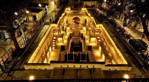

Bansilalpet Step Well
Bansilalpet Step Well, also known as Step Well of Bansilalpet, is an ancient step well located in Hyderabad. It is a historical site that served as a water source and community gathering place in the past.
Location: Bansilalpet, Secunderabad, Hyderabad, Telangana, India
Ticket Price: Free entry
Transportation: Accessible by road, nearest railway station is Secunderabad Junction.